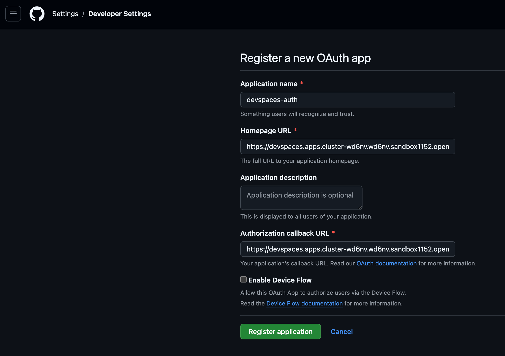
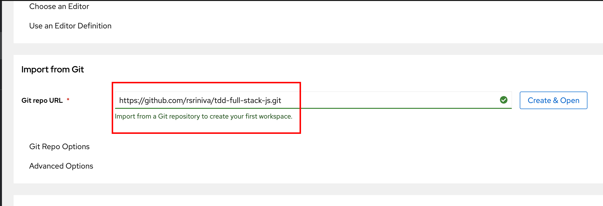
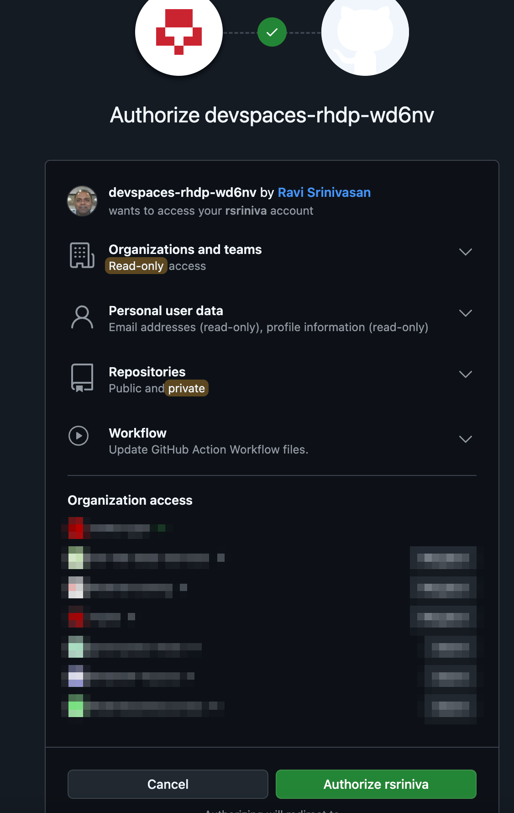

Authentication in Red Hat OpenShift Dev Spaces
Red Hat OpenShift Dev Spaces runs on top of the OpenShift Container Platform, and relies on the underlying platform for many security related features. In previous hands-on labs, you used the admin user to install Dev Spaces as well as perform administrative tasks. You also used non-admin accounts user1…user5 to launch workspaces and test other features of the product (simulating a regular developer persona).
The admin and userX users are authenticated using the internal OpenShift OAuth server backed by credentials stored in an encrypted HTPasswd file. OpenShift supports a number of different Identity Providers like LDAP, GitHub, GitLab, and more. See OpenShift Supported identity providers for the supported list.
Configuring the OAuth server and identity providers for the base OpenShift Container Platform is outside the scope of this course. Consult the product documentation for OpenShift Authentication and authorization for details.
Configuring Credentials Passthrough in Workspaces
In the hands-on labs so far, you have logged in using accounts managed by the base OpenShift OAuth server. For GitHub repositories that are public, you can clone the repositories in the workspace. However, if you want to clone private repositories, or make changes inside the Dev Spaces IDE, and commit the changes back to GitHub, you need to manually setup GitHub tokens or keys and configure your .gitconfig file inside the workspace. You need to do this for every workspace you launch since workspaces are based on container images that are immutable.
Alternatively, for projects where you work with source code in GitHub, GitLab or equivalent source control, you can set up Dev Spaces to authenticate using the OAuth 2.0 protocol and passthrough the user credentials to the workspaces automatically.
When you launch a workspace, you will be prompted for your Git credentials. After you successfully log in, your credentials will be passed through to your IDE instance and you can now pull private repositories, as well as commit changes back to GitHub without any manual set up.
Dev Spaces supports a number of OAuth 2.0 providers like GitHub, GitLab, BitBucket and Azure DevOps. We will mostly focus on GitHub in this section.
| Another alternative is to use GitHub/GitLab Personal Access Tokens (PAT), but this method also requires some manual effort and is less flexible than configuring OAuth for your Dev Spaces setup. |
Lab: Configuring GitHub OAuth 2.0 Authentication for Workspaces
Pre-requisites
-
You must have set up the authentication using the
HTPasswdprovider as outlined in the Configuring OpenShift Users and Authentication in the second course of the learning path. Review the YAML configuration files from that section as a refresher. -
You must have a GitHub account
Steps
-
To configure GitHub OAuth, you need to generate a client ID and client secret from the GitHub side. Log in to GitHub, and navigate to https://github.com/settings/applications/new to create a new GitHub OAuth App.
You need to create OAuth apps and NOT GitHub Apps!. Follow the steps and screenshots carefully. -
In the
New OAuth Applicationpage, enter the following :-
Application name:
devspaces-auth -
Homepage URL: <OpenShift Dev Spaces URL>
-
Authorization callback URL: https://<openshift_dev_spaces_url>/api/oauth/callback
Figure 1. New GitHub OAuth App
-
-
Click
Register Applicationto create the application. ClickGenerate a new client secret. Copy the client ID and client secret and store it securely. -
The next step is to use the generated client ID and client secret in an OpenShift Secret resource on the Dev Spaces side of the configuration to enable OAuth authentication. Create a new YAML file named
github-oauth-conf.yamlwith the following content:kind: Secret apiVersion: v1 metadata: name: github-oauth-config namespace: openshift-devspaces labels: app.kubernetes.io/part-of: che.eclipse.org app.kubernetes.io/component: oauth-scm-configuration annotations: che.eclipse.org/oauth-scm-server: github che.eclipse.org/scm-server-endpoint: https://github.com che.eclipse.org/scm-github-disable-subdomain-isolation: 'false' type: Opaque stringData: id: <GitHub_OAuth_Client_ID> secret: <GitHub_OAuth_Client_Secret> -
Create the secret using the
ocCLI:$ oc apply -f github-oauth-conf.yaml secret/github-oauth-config created -
Wait for a few minutes while the Dev Spaces pods are restarted with the changes. With the browser in
PrivateorIncognitomode, log in as theuser1user and launch a new workspace by providing the GitHub URL of a private repository in theGit repo URLfield.Figure 2. Provide the GitHub URL of a private repositoryClick
Create & Opento launch the workspace. -
Dev Spaces will prompt you for your GitHub credentials and show details about the OAuth app you created previously. Click
Authorizeto continue. -
After your workspace loads, open a new VSCode terminal. Run the
git config -lcommand and notice that your username and email have been injected automatically into your git client configuration.$ git config -l filter.lfs.clean=git-lfs clean -- %f filter.lfs.smudge=git-lfs smudge -- %f ... user.name=<Your Name> user.email=<Your EMail> ... -
Make some changes to the code in the repository, stage the files, and commit them with a suitable message. Run
git pushand verify that the changes are pushed back to your GitHub repository.